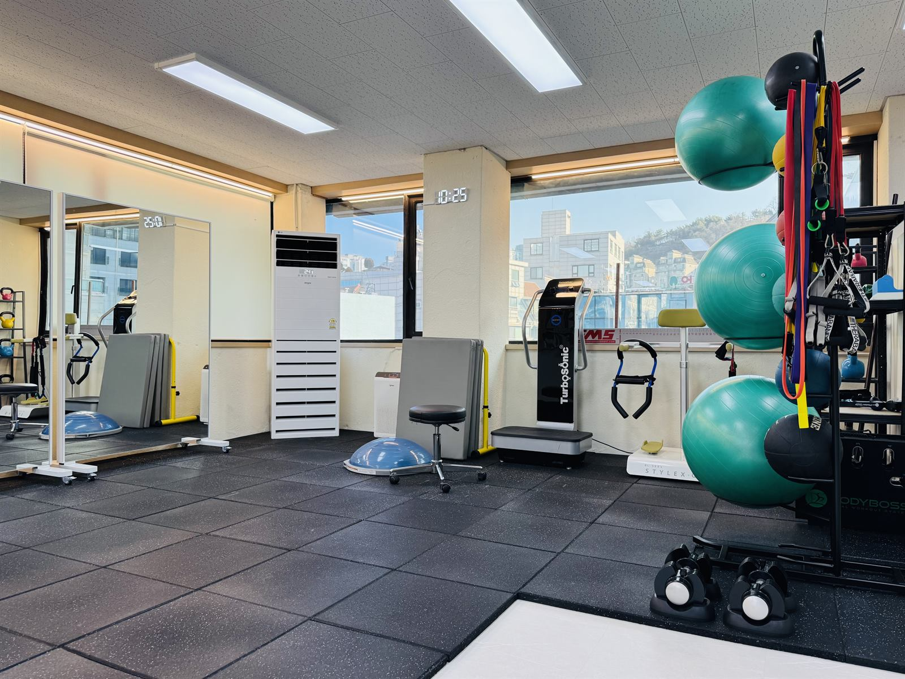
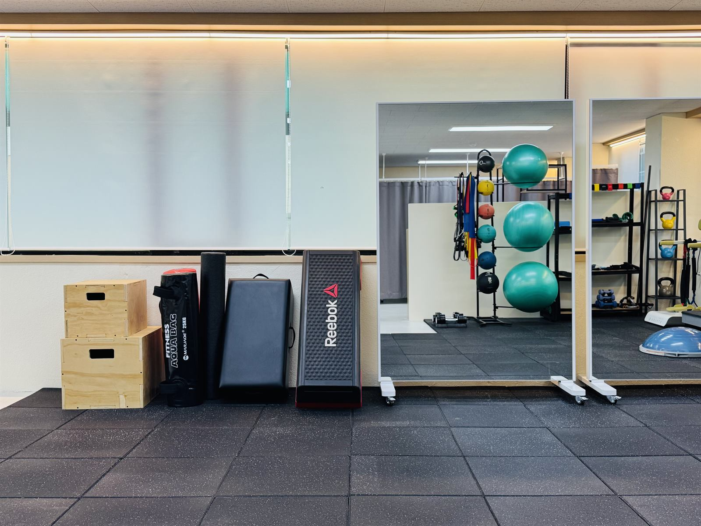

약수점
REAL 약수
중구·약수 생활권에서 1:1로 정렬과 기능을 다시 맞춥니다. 근골격 전공 강사진이 수업을 진행합니다.
오시는 길
주소 서울특별시 중구 동호로7길 32, 더약수빌딩 4층
위치 약수역 5·6·7번 출구 도보 약 3분
시간 평일 09:00–21:00 · 토 09:00–18:00 · 일·공휴일 휴무
주차: 리사르커피 옆 지상, 벤츠 옆 우측 2칸. 내비는 ‘리사르커피 약수’.


